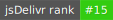

MathJax
Beautiful math in all browsers


MathJax is an open-source JavaScript display engine for LaTeX, MathML, and AsciiMath notation that works in all modern browsers. It was designed with the goal of consolidating the recent advances in web technologies into a single, definitive, math-on-the-web platform supporting the major browsers and operating systems. It requires no setup on the part of the user (no plugins to download or software to install), so the page author can write web documents that include mathematics and be confident that users will be able to view it naturally and easily. Simply include MathJax and some mathematics in a web page, and MathJax does the rest.
Some of the main features of MathJax include:
-
High-quality display of LaTeX, MathML, and AsciiMath notation in HTML pages
-
Supported in most browsers with no plug-ins, extra fonts, or special setup for the reader
-
Easy for authors, flexible for publishers, extensible for developers
-
Supports math accessibility, cut-and-paste interoperability, and other advanced functionality
-
Powerful API for integration with other web applications
See http://www.mathjax.org/ for additional details about MathJax, and https://docs.mathjax.org for the MathJax documentation.
MathJax Components
MathJax version 3 uses files called components that contain the various MathJax modules that you can include in your web pages or access on a server through NodeJS. Some components combine all the pieces you need to run MathJax with one or more input formats and a particular output format, while other components are pieces that can be loaded on demand when needed, or by a configuration that specifies the pieces you want to combine in a custom way. For usage instructions, see the MathJax documentation.
Components provide a convenient packaging of MathJax's modules, but it is possible for you to form your own custom components, or to use MathJax's modules directly in a node application on a server. There are web examples showing how to use MathJax in web pages and how to build your own components, and node examples illustrating how to use components in node applications or call MathJax modules directly.
What's in this Repository
This repository contains only the component files for MathJax, not the source code for MathJax (which are available in a separate MathJax source repository). These component files are the ones served by the CDNs that offer MathJax to the web. In version 2, the files used on the web were also the source files for MathJax, but in version 3, the source files are no longer on the CDN, as they are not what are run in the browser.
The components are stored in the es5 directory, and are in ES5 format
for the widest possible compatibility. In the future, we may make an
es6 directory containing ES6 versions of the components.
Installation and Use
Using MathJax components from a CDN on the web
If you are loading MathJax from a CDN into a web page, there is no
need to install anything. Simply use a script tag that loads
MathJax from the CDN. E.g.,
<script id="MathJax-script" async src="https://cdn.jsdelivr.net/npm/mathjax@3/es5/tex-mml-chtml.js"></script>See the MathJax documentation, the MathJax Web Demos, and the MathJax Component Repository for more information.
Hosting your own copy of the MathJax Components
If you want to host MathJax from your own server, you can do so by
installing the mathjax package using npm and moving the es5
directory to an appropriate location on your server:
npm install mathjax@3
mv node_modules/mathjax/es5 <path-to-server-location>/mathjaxNote that we are still making updates to version 2, so include @3
when you install, since the latest chronological version may not be
version 3.
Alternatively, you can get the files via GitHub:
git clone https://github.com/mathjax/MathJax.git mj-tmp
mv mj-tmp/es5 <path-to-server-location>/mathjax
rm -rf mj-tmpThen (in either case) you can use a script tag like the following:
<script id="MathJax-script" async src="<url-to-your-site>/mathjax/tex-chtml.js"></script>where <url-to-your-site> is replaced by the URL to the location
where you moved the MathJax files above.
See the documentation for details.
Using MathJax components in a node application
To use MathJax components in a node application, install the mathjax package:
npm install mathjax@3(we are still making updates to version 2, so you should include @3
since the latest chronological version may not be version 3).
Then require mathjax within your application:
require('mathjax').init({ ... }).then((MathJax) => { ... });where the first { ... } is a MathJax configuration, and the second
{ ... } is the code to run after MathJax has been loaded. E.g.
require('mathjax').init({
loader: {load: ['input/tex', 'output/svg']}
}).then((MathJax) => {
const svg = MathJax.tex2svg('\\frac{1}{x^2-1}', {display: true});
console.log(MathJax.startup.adaptor.outerHTML(svg));
}).catch((err) => console.log(err.message));Note: this technique is for node-based application only, not for
browser applications. This method sets up an alternative DOM
implementation, which you don't need in the browser, and tells MathJax
to use node's require() command to load external modules. This
setup will not work properly in the browser, even if you webpack it or
bundle it in other ways.
See the documentation and the MathJax Node Repository for more details.
Reducing the Size of the Components Directory
Since the es5 directory contains all the component files, so if
you are only planning one use one configuration, you can reduce the
size of the MathJax directory by removing unused components. For
example, if you are using the tex-chtml.js component, then you can
remove the tex-mml-chtml.js, tex-svg.js, tex-mml-svg.js,
tex-chtml-full.js, and tex-svg-full.js configurations, which will
save considerable space. Indeed, you should be able to remove
everything other than tex-chtml.js, and the input/tex/extensions,
output/chtml/fonts/woff-v2, adaptors, a11y, and sre
directories. If you are using the results only on the web, you can
remove adaptors as well.
If you are not using A11Y support (e.g., speech generation, or
semantic enrichment), then you can remove a11y and sre as well
(though in this case you may need to disable the assistive tools in
the MathJax contextual menu in order to avoid MathJax trying to load
them when they aren't there).
If you are using SVG rather than CommonHTML output (e.g., tex-svg.js
rather than tex-chtml.js), you can remove the
output/chtml/fonts/woff-v2 directory. If you are using MathML input
rather than TeX (e.g., mml-chtml.js rather than tex-chtml.js),
then you can remove input/tex/extensions as well.
The Component Files and Pull Requests
The es5 directory is generated automatically from the contents of the
MathJax source repository. You can rebuild the components using the
command
npm run make-es5 --silentNote that since the contents of this repository are generated
automatically, you should not submit pull requests that modify the
contents of the es5 directory. If you wish to submit a modification
to MathJax, you should make a pull request in the MathJax source
repository.
MathJax Community
The main MathJax website is http://www.mathjax.org, and it includes announcements and other important information. A MathJax user forum for asking questions and getting assistance is hosted at Google, and the MathJax bug tracker is hosted at GitHub.
Before reporting a bug, please check that it has not already been reported. Also, please use the bug tracker (rather than the help forum) for reporting bugs, and use the user's forum (rather than the bug tracker) for questions about how to use MathJax.